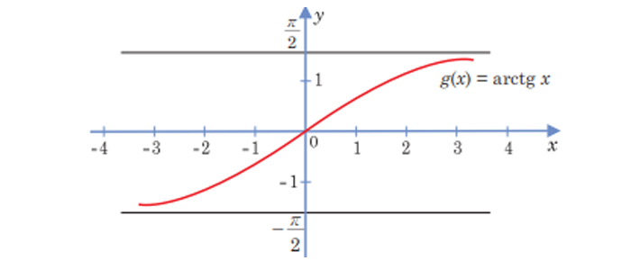

Ters funksiýa barada düşünje.
Teorema: Özara ters funksiýalaryň grafikleri y = x göni
çyzyga görä simmetrikdir.
Ters trigonometrik funksiýalar
1. Arksinus.
Kesgitleme: arcsina sinusy a deň bolan [ -π/2 ; π/2 ] aralykdaky burçdur.
Bu kesgitlemeden –1 ≤ α ≤ 1 bolanda sin(arcsinα) = α we -π/2 ≤ a ≤ π/2 bolýandygy gelip çykýar. Tersine, eger sin a = α
we -π/2 ≤ a ≤ π/2 bolsa , onda α = arcsin a.
2. Arkkosinus.
Kesgitleme. arccosα kosinusy α deň bolan [0; π] aralykdaky burçdur.
Bu kesgitlemeden [α] ≤ 1 bolanda, cos(arccosα) = a we 0 ≤ arccos α ≤ π bolýandygy gelip çykýar. Tersine, eger cos a = α
we 0 ≤ a ≤ π bolsa, onda a = arccosα.
y = arccosx funksiýanyň kesgitleniş ýaýlasy [–1; 1] we bahalar ýaýlasy [0; π] aralyklara deňdir.
3. Arktangens.
Kesgitleme. arctgα tangensi α deň bolan ( -π/2 ; π/2 ) aralykdaky burçdur.

4. Arkkotangens.
Kesgitleme. arcctgα kotangensi α deň bolan (0; π) aralykdaky burçdur.